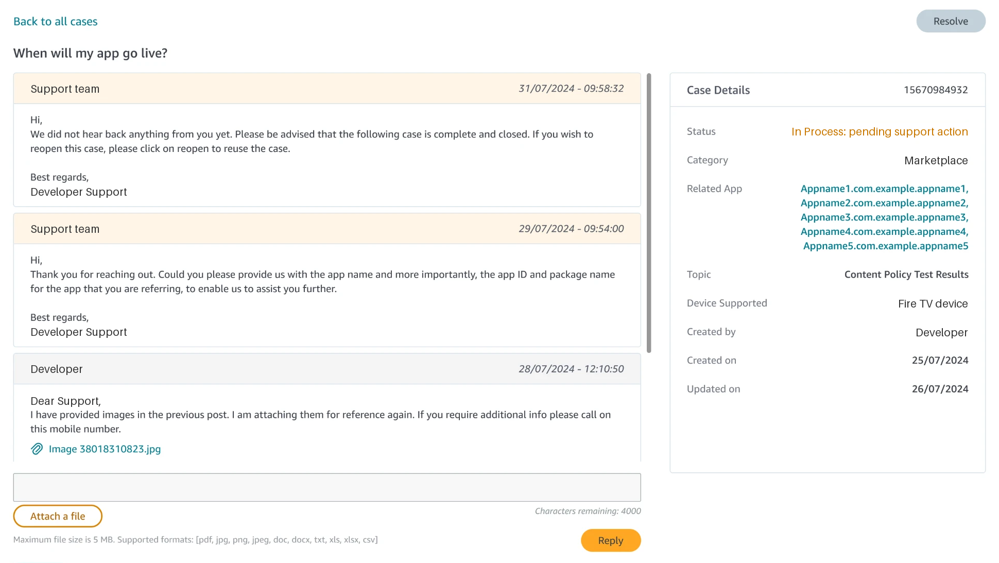

Case study · Product design · Developer tools
Helping a major app marketplace’s developers follow their support cases, cutting case volume by ~47%, then ~87%.
What began as a request for two-way communication became a rethink of the support case itself: something a developer can open, follow and return to.
